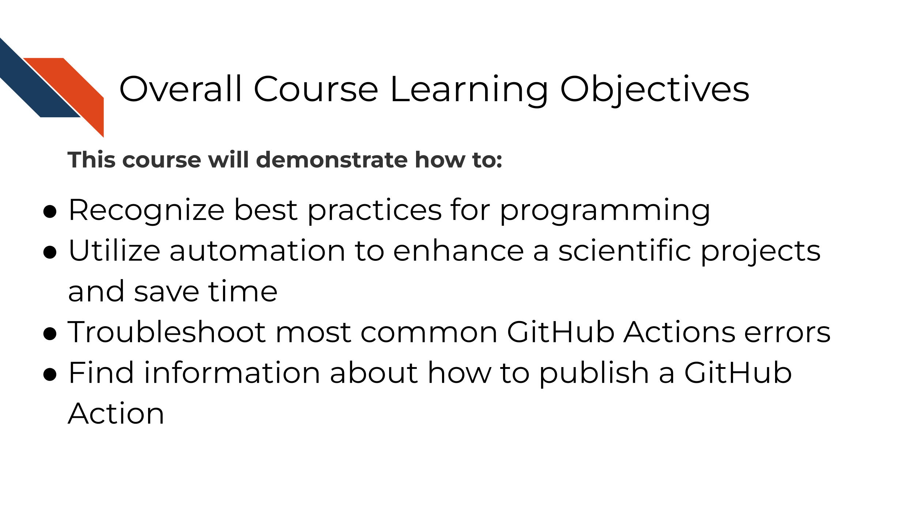

Chapter 1 Introduction
1.1 Target Audience
The course is intended for students in the biomedical sciences and researchers who use informatics tools in their research
This course is written for individuals who:
- Are comfortable with GitHub and know how to make a pull request
- Wish to save time and enhance their scientific projects using automation
- Perhaps previously tried to learn about GitHub Actions but felt overwhelmed on how to get started

1.2 Topics covered
This course covers how to use GitHub actions for scientific software development. We encourage the recognition that scientific software can take many forms that can all benefit from the concepts of continuous integration and continuous deployment.

This course builds on concepts introduced in the Reproducibility and Advanced Reproducibility courses from the ITCR Training Network. If you are unfamiliar with GitHub and/or do not have an account, we’d suggest you start with those courses by using the links or QR codes below.

1.3 Motivation
Cancer datasets are plentiful, complicated, and hold untold amounts of information regarding cancer biology. Cancer researchers are working to apply their expertise to the analysis of these vast amounts of data but training opportunities to properly equip them in these efforts can be sparse. This includes training in reproducible data analysis methods.
Data analyses are generally not reproducible without direct contact with the original researchers and a substantial amount of time and effort (Beaulieu-Jones and Greene 2017). Reproducibility in cancer informatics (as with other fields) is still not monitored or incentivized despite that it is fundamental to the scientific method. Despite the lack of incentive, many researchers strive for reproducibility in their own work but often lack the skills or training to do so effectively.
Equipping researchers with the skills to create reproducible data analyses increases the efficiency of everyone involved. One tool among many for creating reproducible analyses is utilizing automation. Many individuals performing analyses on cancer data may not have formal training in software development and may be unfamiliar with the ideas of continuous integration and continuous deployment. By recognizing that biological data analysis code is a form of software development, we can try to adapt good development practices in scientific analyses and software contexts.
Scientific software projects may include (but aren’t limited to):
- Software that built as tools to be utilized by others to analyze biologically derived data.
- Code that is built primarily for analyzing one project’s data.
- Code that is built as a workflow for a series of steps and analyses that might be reused among collaborators or within a lab.
- Any scripts and code that are built to handle data in a research setting.
- Any scripts and code a researcher might interact with.
1.4 Curriculum
The course includes hands-on exercises for how to understand, build, and troubleshoot GitHub Actions as a continuous integration/continuous deployment tool for scientific software projects.
Goal of this course:
Equip learners with basics skills and confidence to utilize the concepts of continuous integration in the context of scientific software.
What is not the goal
This course is meant to teach learners how to create sophisticated GitHub Actions, but instead introduce learners to basic fundamentals of continuous integration and continuous deployment. This course focuses on GitHub Actions and will not cover any other (perfectly fine) tools for CI/CD.
1.5 How to use the course
Ideally you should follow along with the chapters and perform they activities as they are described. These activities involve using GitHub and GitHub actions. You will need a GitHub account and basic familiarity with GitHub.